一、阅读的分类
1）必须精读的，这类书籍是能够改变底层操作系统的书
2）可以速读的，这类书籍有新视角，但多数观点“似曾相识”，价值不高
3）只需要检索的，这类书只需要其中某个新观点、答案、概念即可。
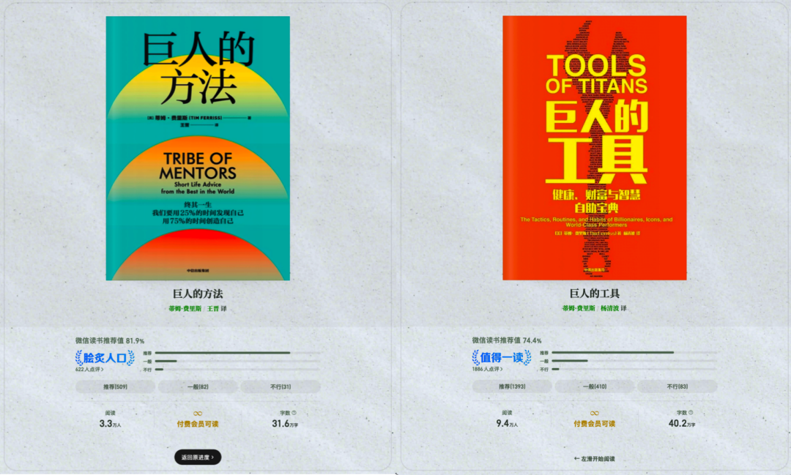
二、AI速读三步法：Grok—Gemini—NotebookLM
以下是具体的操作步骤：
Step1.首先用Grok梳理并概述作家的背景以及这两本书的核心内容，并检索作者最新发布的内容及最新的观点，Grok在信息检索上的能力堪称第一，可以深入了解作者的最新动态、最新观点。
提示词模板：作者 + 书籍框架速读：
用“结构化提纲”的方式，介绍 Tim Ferriss 的背景与核心影响力（职业轨迹、代表作品、争议点、核心方法论关键词）。
并分别概述《Tools of Titans》《Tribe of Mentors》（或中文书名）两本书的：
1）核心主题
2）内容结构
3）最常被引用的观点/工具
4）适合哪些人读
5）最可能被误读的地方。
最后给出一句话总结：这两本书对一个普通人最大的真实价值是什么。
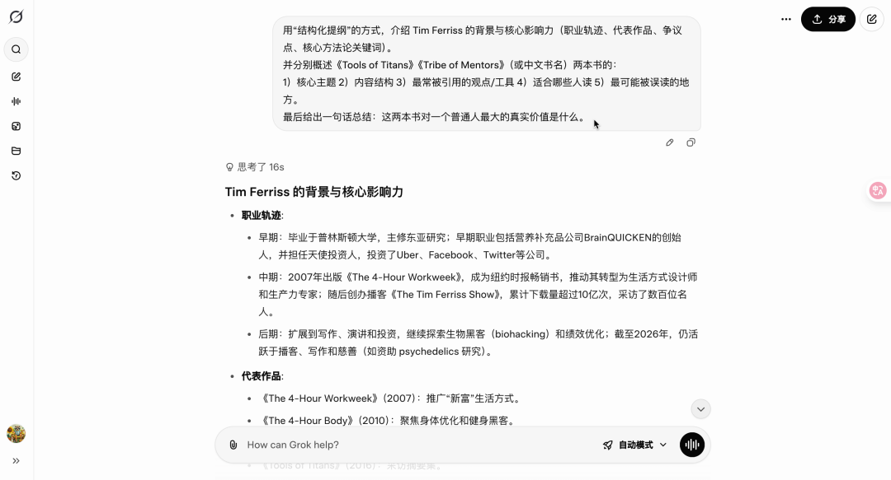
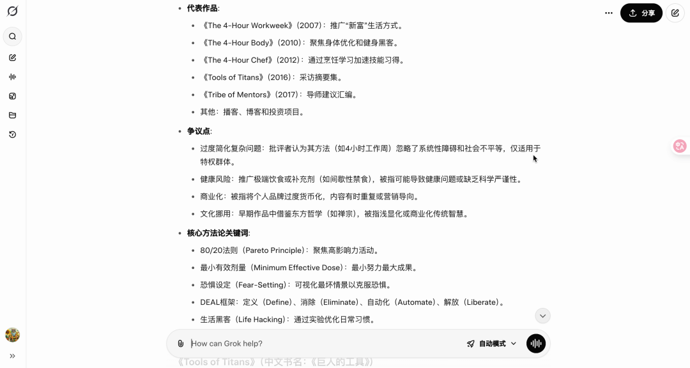
提示词模板：作者最新观点与动态
请检索 Tim Ferriss 最近 12 个月（或 24 个月）公开发布的内容（播客/博客/访谈/社媒）。
1）列出他最常谈的 10 个主题
2）提炼其中 3-5 个“明显不同于他早期观点”的变化
3）给出证据来源（链接/标题/发布时间）
4）总结：他现在最在意的是什么？最反复强调的是什么？
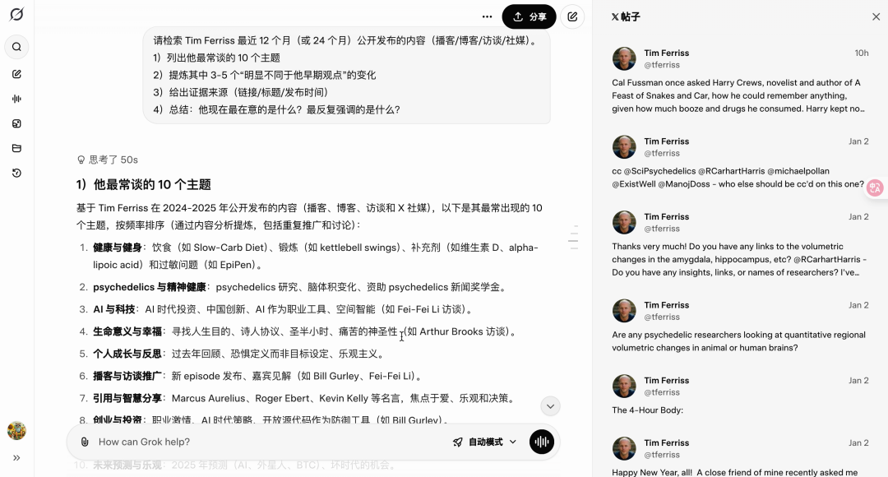
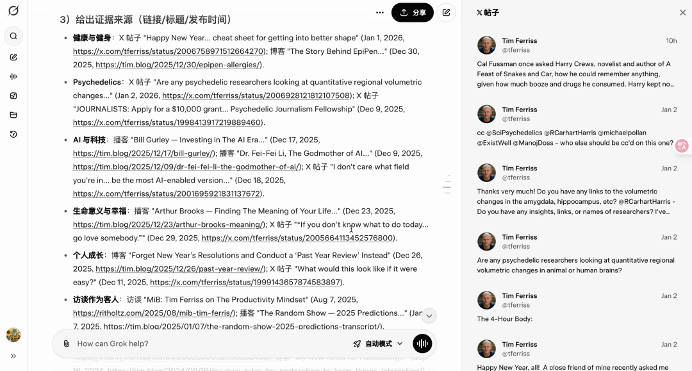
以研究报告的格式，深度梳理《Tools of Titans》《Tribe of Mentors》的核心内容：
1）提炼两本书共同的“高频原则/高频工具”并分组（健康、学习、财富、心理、效率、人际等）
2）每组输出：核心观点一句话 + 关键方法 3 条 + 适用条件 + 常见误区
3）列出最值得普通人立刻实践的 20 个行动建议（按投入产出比排序）
4）最后输出：如果只读 30 分钟，应该带走哪 10 条“压箱底结论”。
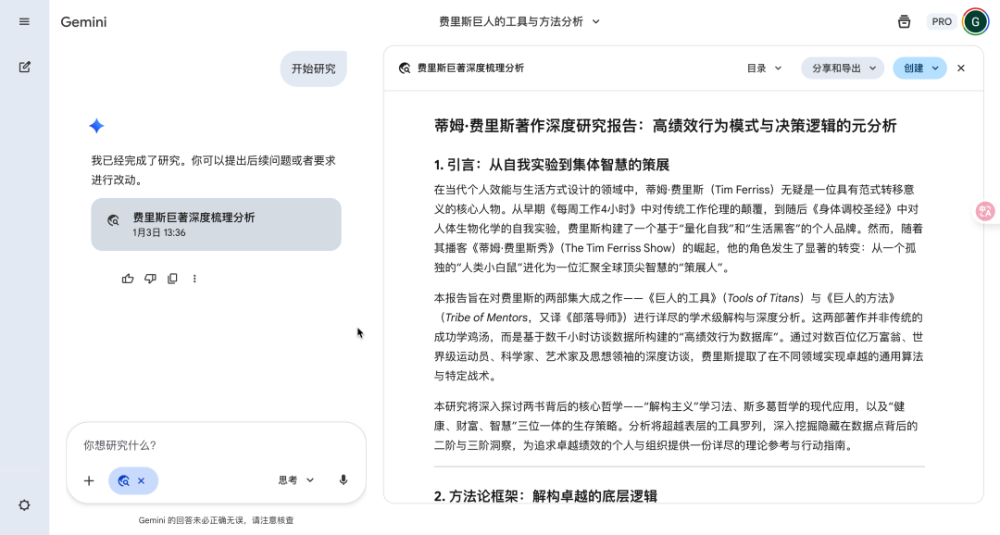
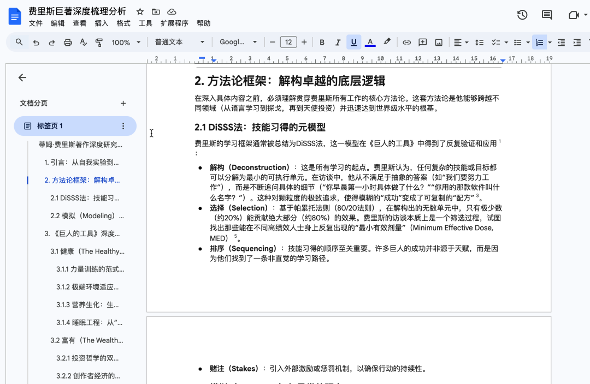
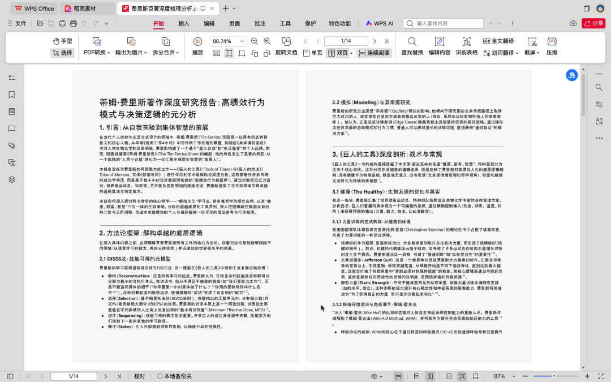
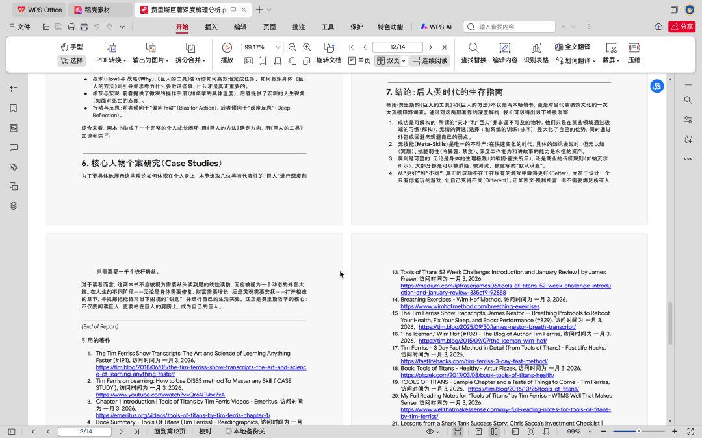
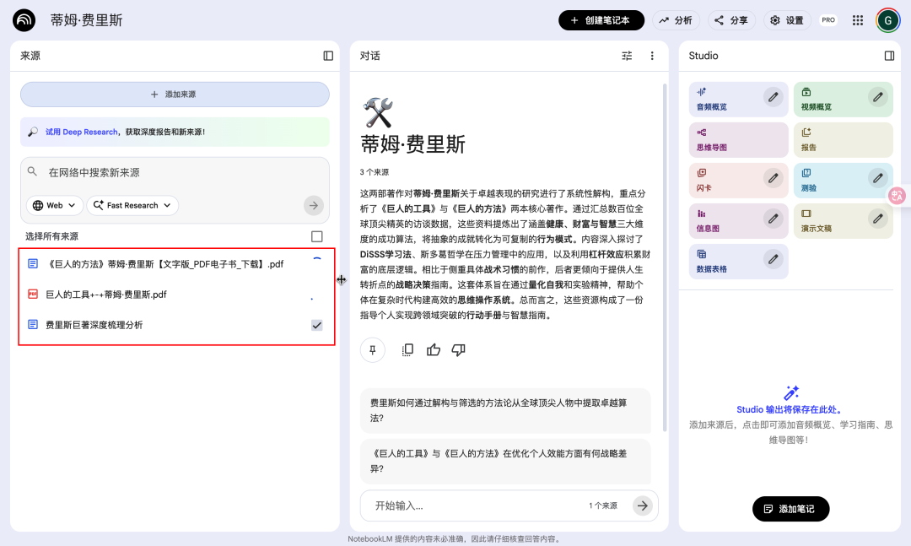
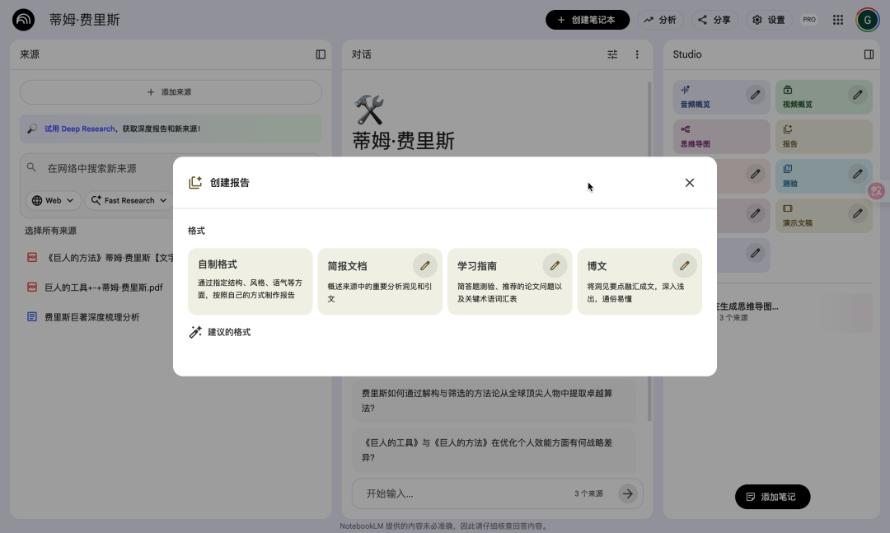
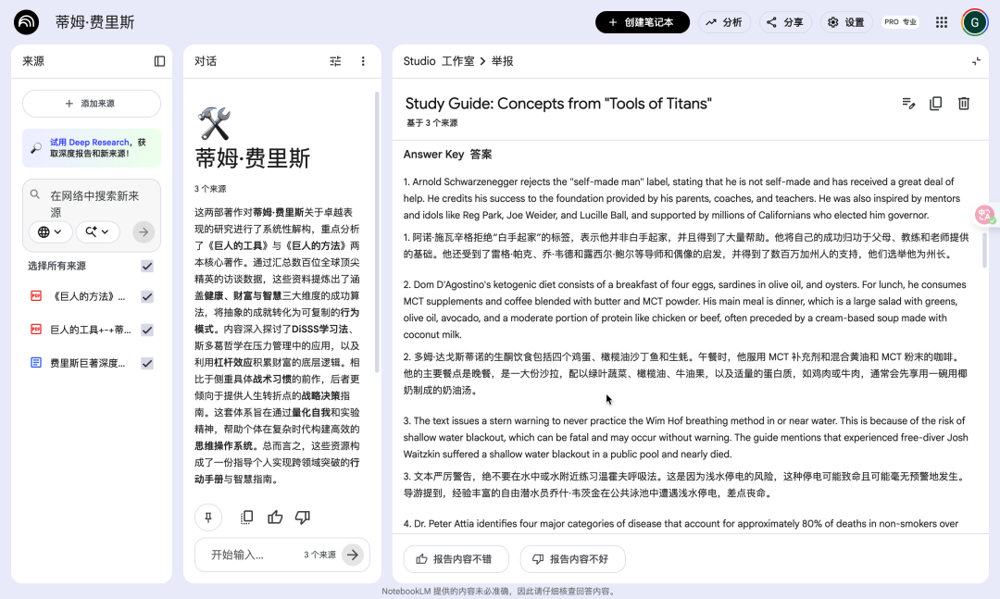
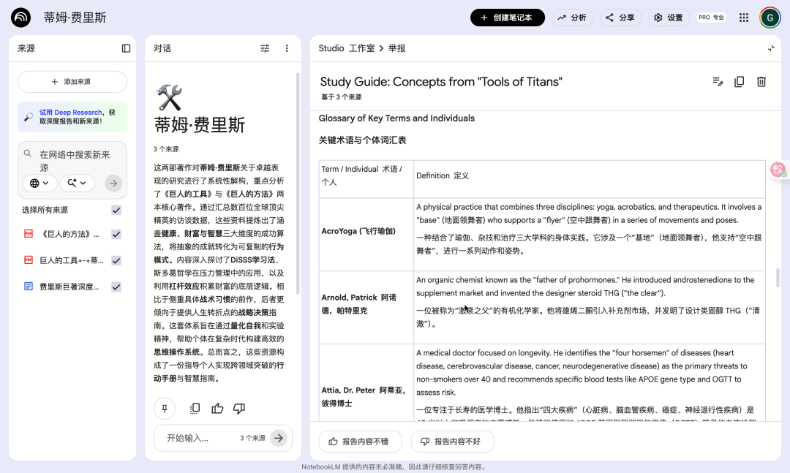
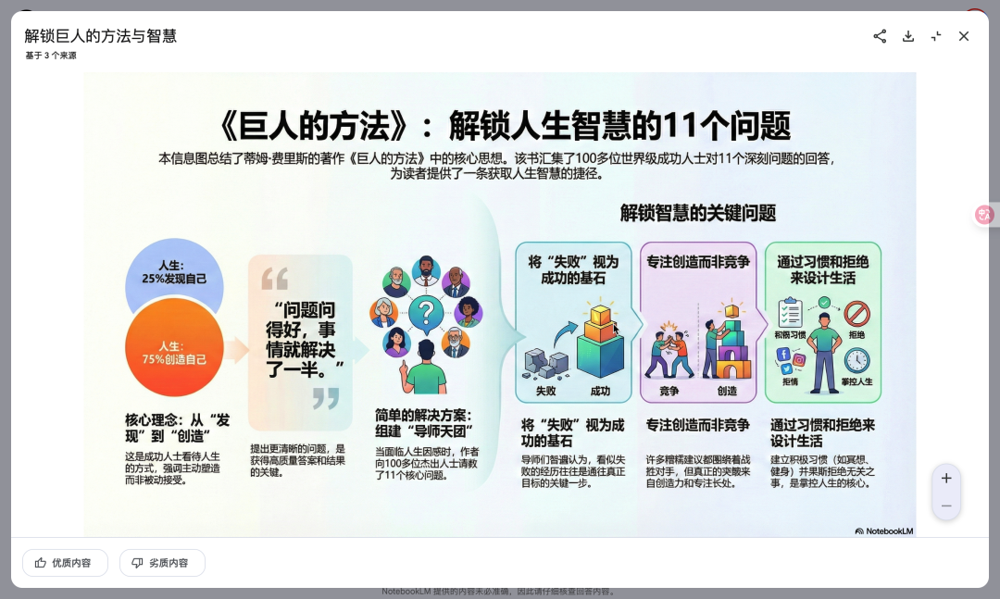
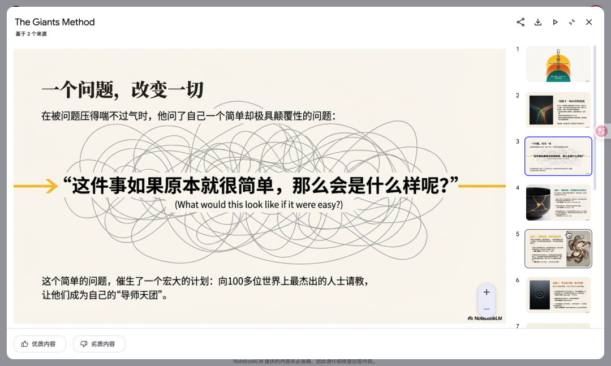
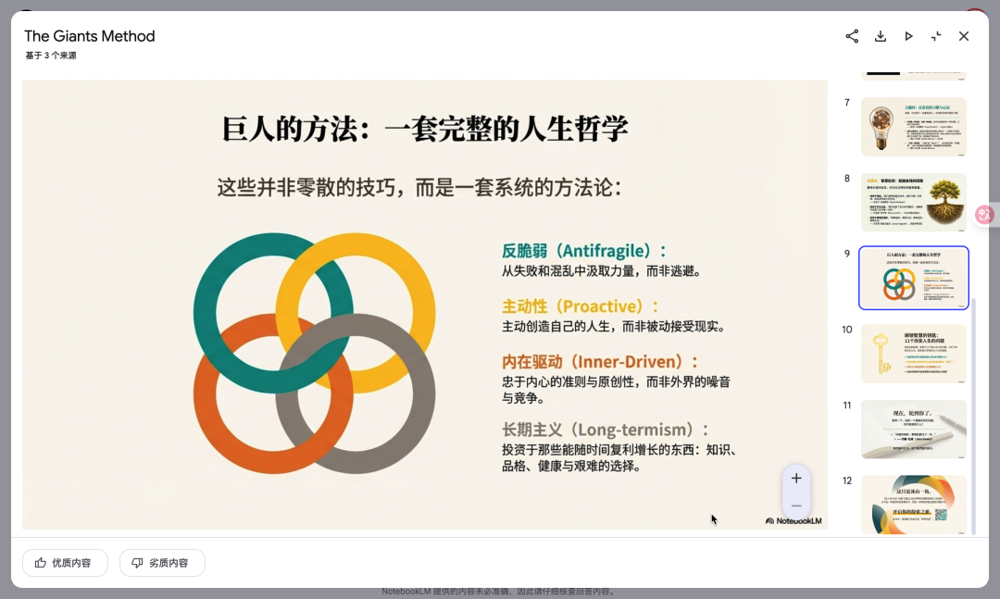